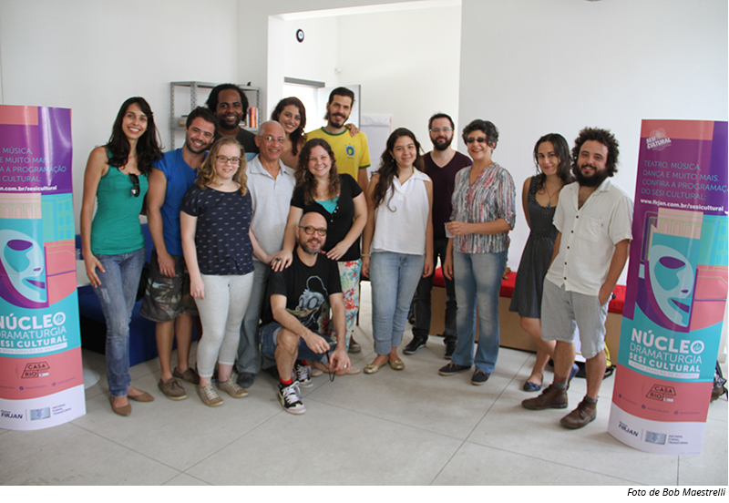

SEGUNDA TURMA (2015 - 2016)
A segunda turma (2015-2016) contou com 15 participantes e foi coordenada pela dramaturga Marcia Zanelatto, contando com a orientação dos dramaturgos Diogo Liberano e Walter Daguerre. Os 15 participantes foram divididos em três grupos e criaram dramaturgias coletivamente. Das três dramaturgias publicadas em um livro, “E de repente uma ossada de baleia emergiu na cidade”, escrita por Andressa Hazboun, Gabriel Barros, Gabriela Giffoni, Pablo Kaschner e Pedro Leal David foi encenada por Fabiano de Freitas e se apresentou na rede de teatros do SESI Rio de Janeiro.

Integraram a segunda turma os seguintes participantes: Andressa Moreira Hazboun, Daniella Rougemont, Felipe Pedrini, Gabriel Barros, Gabriela Giffoni, Glauco de Oliveira, Helena Schoenau de Azevedo, José Jorge Santos, Leticia Bueno Orcy, Louise de Lemos, Luiz Henrique Duarte, Maria Queiroz Azevedo, Pablo Kaschner e Pedro Leal David.
Download das dramaturgias finais criadas pela segunda turma.